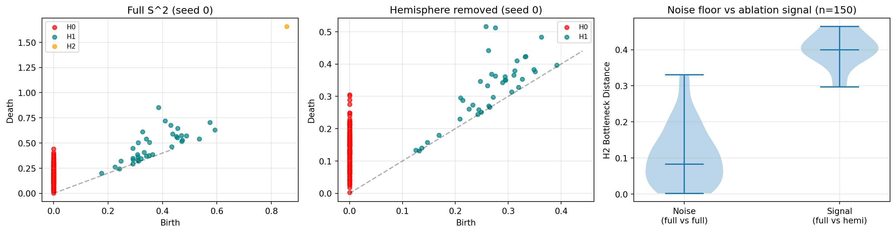
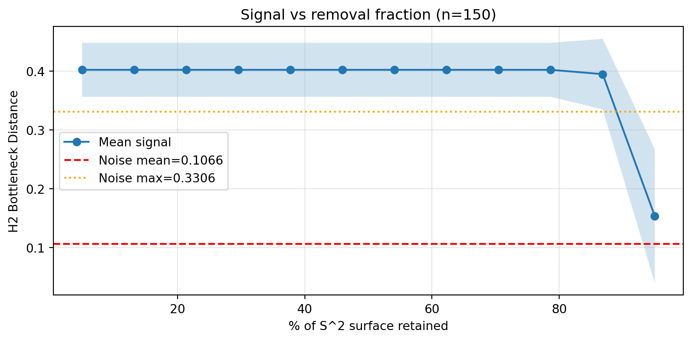
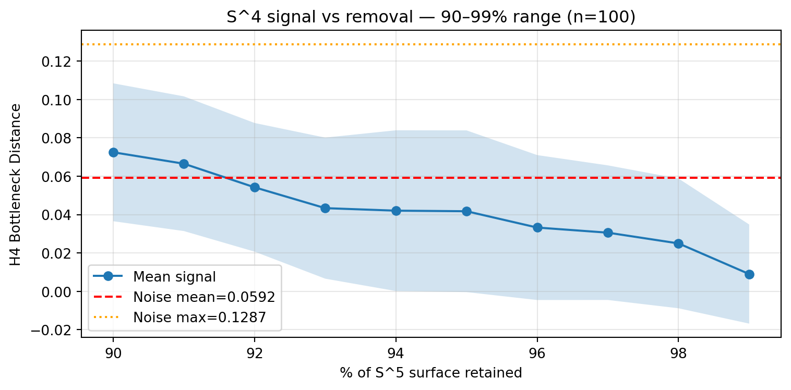

Code
import os
from itertools import combinations
import gph
import matplotlib.pyplot as plt
import numpy as np
import pandas as pd
from persim import bottleneck
from scipy.special import betainc, betaincinvSynthetic sanity check — sphere ablation experiments
May 30, 2026
Can persistent homology detect the topological signature of a missing region in a point cloud? Phase 1 tests this on synthetic data (spheres) before applying the idea to CLIP embeddings in Phase 2. All experiments use giotto-ph for persistent homology and persim for bottleneck distances.
import pickle
from pathlib import Path
_CACHE_DIR = Path(".cache")
_CACHE_DIR.mkdir(exist_ok=True)
def _cache(key: str, fn):
path = _CACHE_DIR / f"{key}.pkl"
if path.exists():
return pickle.loads(path.read_bytes())
result = fn()
path.write_bytes(pickle.dumps(result))
return result
def sample_sphere(n_pts, dim_ambient, seed):
rng = np.random.default_rng(seed)
pts = rng.standard_normal((n_pts, dim_ambient))
return pts / np.linalg.norm(pts, axis=1, keepdims=True)
def sample_hemisphere(n_pts, dim_ambient, threshold=0.0, seed=None):
rng = np.random.default_rng(seed)
accepted = []
while len(accepted) < n_pts:
batch = rng.standard_normal((n_pts * 4, dim_ambient))
batch /= np.linalg.norm(batch, axis=1, keepdims=True)
accepted.extend(batch[batch[:, 0] < threshold])
return np.array(accepted[:n_pts])
def h_finite(dgms, dim):
d = dgms[dim]
return d[np.isfinite(d[:, 1])]
def surface_fraction(threshold, sphere_dim):
"""Fraction of S^sphere_dim surface area with x[0] < threshold."""
return betainc(sphere_dim / 2, sphere_dim / 2, (1 + threshold) / 2)
n_pts = 150
n_threads = os.cpu_count()giotto-tda (the original plan) took ~13 minutes for 10 resamples of 150 points in R^5 with H4. Switching to giotto-ph (which parallelises column reduction across CPU cores via OpenMP) made the same computation near-instantaneous. All subsequent work uses giotto-ph directly.
ripser is also faster than giotto-tda but is single-threaded per computation — useful when parallelising many small jobs via joblib, but outclassed by giotto-ph for a single large computation.
Setup: 10 random resamples of 150 points from S^4 (unit sphere in R^5). Compute H4 persistence diagram for each. Take all C(10,2) = 45 pairwise bottleneck distances.
d_amb = 5
top_dim = d_amb - 1 # H4
diags_resample = [
gph.ripser_parallel(
sample_sphere(n_pts, d_amb, s), maxdim=top_dim, n_threads=n_threads
)["dgms"]
for s in range(10)
]
n_resamples = len(diags_resample)
results = {}
for i, j in combinations(range(n_resamples), 2):
h_i = h_finite(diags_resample[i], top_dim)
h_j = h_finite(diags_resample[j], top_dim)
results[(i, j)] = bottleneck(h_i, h_j)
distances = np.array(list(results.values()))
fig, axes = plt.subplots(1, 2, figsize=(12, 4))
axes[0].hist(distances, bins=15, edgecolor="black", alpha=0.7)
axes[0].axvline(distances.mean(), color="red", linestyle="--", label=f"mean={distances.mean():.4f}")
axes[0].axvline(np.median(distances), color="orange", linestyle="--", label=f"median={np.median(distances):.4f}")
axes[0].set_xlabel(f"H{top_dim} Bottleneck Distance")
axes[0].set_ylabel("Count")
axes[0].set_title(f"Noise floor — S^{top_dim} resamples (n={n_pts})")
axes[0].legend()
mat = np.zeros((n_resamples, n_resamples))
for (i, j), v in results.items():
mat[i, j] = v
mat[j, i] = v
im = axes[1].imshow(mat, cmap="viridis")
axes[1].set_title("Distance Matrix")
axes[1].set_xlabel("Resample index")
axes[1].set_ylabel("Resample index")
plt.colorbar(im, ax=axes[1])
plt.tight_layout()
plt.show()
pd.DataFrame(
{"min": [distances.min()], "max": [distances.max()], "mean": [distances.mean()], "std": [distances.std()]},
index=[f"H{top_dim} bottleneck distance"],
).round(4)H4 is cleanly detectable at n=150 — each resample produces exactly one prominent H4 generator well off the diagonal. Any ablation signal must exceed ~0.11 (noise max) to be unambiguously attributable to topology rather than sampling noise.
Setup: Compare persistence diagrams of (a) full S^2 and (b) a hemisphere of S^2 (same n=150 points, sampled directly from the restricted domain so sample sizes match).
Why S^2? Full S^2 has one H2 generator — the “void” enclosed by the sphere. A hemisphere is contractible (homeomorphic to a disk), so H2 must vanish completely.
def _compute_s2_ablation():
_diags_full = [
gph.ripser_parallel(
sample_sphere(n_pts, D_AMB, s), maxdim=T_DIM, n_threads=n_threads
)["dgms"]
for s in range(N_REPS)
]
_diags_hemi = [
gph.ripser_parallel(
sample_hemisphere(n_pts, D_AMB, threshold=0.0, seed=s), maxdim=T_DIM, n_threads=n_threads
)["dgms"]
for s in range(N_REPS)
]
_noise = np.array([
bottleneck(h_finite(_diags_full[i], T_DIM), h_finite(_diags_full[j], T_DIM))
for i, j in combinations(range(N_REPS), 2)
])
_signal = np.array([
bottleneck(h_finite(_diags_full[i], T_DIM), h_finite(_diags_hemi[i], T_DIM))
for i in range(N_REPS)
])
return _diags_full, _diags_hemi, _noise, _signal
diags_full, diags_hemi_half, noise, signal_half = _cache("s2_ablation", _compute_s2_ablation)
pd.DataFrame(
{
"mean": [noise.mean(), signal_half.mean()],
"std": [noise.std(), signal_half.std()],
"min": [noise.min(), signal_half.min()],
"max": [noise.max(), signal_half.max()],
"SNR vs noise mean": ["—", f"{signal_half.mean() / noise.mean():.1f}×"],
},
index=[f"Noise (full vs full, H{T_DIM})", f"Signal (full vs hemi, H{T_DIM})"],
).round(4)| mean | std | min | max | SNR vs noise mean | |
|---|---|---|---|---|---|
| Noise (full vs full, H2) | 0.1066 | 0.0839 | 0.0020 | 0.3306 | — |
| Signal (full vs hemi, H2) | 0.4021 | 0.0458 | 0.2969 | 0.4642 | 3.8× |
The signal of ~0.40 matches the theoretical maximum exactly: when one diagram has an H2 feature and the other is empty, the bottleneck distance equals persistence / 2 (the cost of matching the feature to the diagonal). The H2 feature has persistence ≈ 0.80, so the ceiling is 0.40.
The noise floor has a wide tail (max = 0.33) because different random seeds produce H2 features with slightly different persistence values. The noise mean (0.11) is the more stable reference.
thresholds = np.linspace(-0.9, 0.9, 12)
pct_retained = (1 + thresholds) / 2 * 100
def _compute_s2_sweep():
_means, _stds = [], []
for thresh in thresholds:
_diags_hemi = [
gph.ripser_parallel(
sample_hemisphere(n_pts, D_AMB, threshold=thresh, seed=s),
maxdim=T_DIM, n_threads=n_threads,
)["dgms"]
for s in range(N_REPS)
]
sig = np.array([
bottleneck(h_finite(diags_full[i], T_DIM), h_finite(_diags_hemi[i], T_DIM))
for i in range(N_REPS)
])
_means.append(sig.mean())
_stds.append(sig.std())
return np.array(_means), np.array(_stds)
signal_means, signal_stds = _cache("s2_sweep", _compute_s2_sweep)
Signal is flat at the theoretical maximum (~0.40) from 5% retained to 87% retained — H2 is completely absent (not just weakened) for any removal larger than ~13% of the surface. The crossover into ambiguous territory occurs between 87% and 95% retained.
Detection threshold: ~10–13% of surface area must be removed for a reliable signal (above noise max = 0.33) at n=150.
CIFAR-100 has 100 fine-grained classes. Removing one class is a ~1% perturbation — well below the ~10% threshold observed here. Removing a full 5-class superclass is ~5%, which sits in the ambiguous zone on this synthetic test. The brief’s suggestion to use a 5-class superclass removal as the primary Phase 2 experiment is well-calibrated by these results.
Expected outcome: no signal for single-class removal; marginal or ambiguous signal for superclass removal. A clean negative is a valid and informative finding.
def _compute_s5_noise():
_diags = [
gph.ripser_parallel(
sample_sphere(n_pts5, D_AMB5, s), maxdim=T_DIM5, n_threads=n_threads
)["dgms"]
for s in range(N_REPS5)
]
_noise = np.array([
bottleneck(h_finite(_diags[i], T_DIM5), h_finite(_diags[j], T_DIM5))
for i, j in combinations(range(N_REPS5), 2)
])
return _diags, _noise
diags_full5, noise5 = _cache("s5_noise_floor", _compute_s5_noise)| mean | max | |
|---|---|---|
| H4 noise floor | 0.0592 | 0.1287 |
pct_retained5 = np.arange(90, 100, 1)
thresholds5 = np.array([
2 * betaincinv(sphere_dim5 / 2, sphere_dim5 / 2, p / 100) - 1
for p in pct_retained5
])
def _compute_s5_sweep():
_means, _stds = [], []
for pct, thresh in zip(pct_retained5, thresholds5):
_diags_hemi = [
gph.ripser_parallel(
sample_hemisphere(n_pts5, D_AMB5, threshold=thresh, seed=s),
maxdim=T_DIM5, n_threads=n_threads,
)["dgms"]
for s in range(N_REPS5)
]
sig = np.array([
bottleneck(h_finite(diags_full5[i], T_DIM5), h_finite(_diags_hemi[i], T_DIM5))
for i in range(N_REPS5)
])
_means.append(sig.mean())
_stds.append(sig.std())
return np.array(_means), np.array(_stds)
signal5_means, signal5_stds = _cache("s5_sweep", _compute_s5_sweep)To check whether the ~10% detection threshold generalises to higher dimensions, we repeated the sweep on S^4 (H4 in R^5) with n=100 points and 10 resamples, sweeping 90–99% surface retained in 1% steps.
| % retained | threshold | signal mean | signal std | SNR (vs noise mean) | |
|---|---|---|---|---|---|
| 0 | 90 | 0.6084 | 0.0725 | 0.0359 | 1.23 |
| 1 | 91 | 0.6300 | 0.0666 | 0.0351 | 1.12 |
| 2 | 92 | 0.6527 | 0.0543 | 0.0335 | 0.92 |
| 3 | 93 | 0.6766 | 0.0434 | 0.0368 | 0.73 |
| 4 | 94 | 0.7020 | 0.0421 | 0.0419 | 0.71 |
| 5 | 95 | 0.7293 | 0.0418 | 0.0421 | 0.71 |
| 6 | 96 | 0.7592 | 0.0333 | 0.0378 | 0.56 |
| 7 | 97 | 0.7927 | 0.0306 | 0.0351 | 0.52 |
| 8 | 98 | 0.8319 | 0.0250 | 0.0338 | 0.42 |
| 9 | 99 | 0.8822 | 0.0090 | 0.0258 | 0.15 |

Finding: signal never clears the noise ceiling. At n=100, the noise max is 0.1287 — nearly 2× the noise mean (0.0592). The mean signal at 90% retained is 0.0725, above the noise mean but well below the noise max. The confidence band goes negative at higher thresholds — variance exceeds the mean, meaning some seeds produce near-zero signal (H4 undetectable for that resample).
Why: With 100 points in R^5, the H4 generator sits right at the detection limit. Different seeds produce wildly different persistence values. The S^2 experiment worked cleanly because H2 in R^3 is easy to detect at n=150; H4 in R^5 requires significantly more points.
S^4 result is inconclusive at n=100. A reliable noise floor for H4 would require n≫100, which is outside the time budget. The S^2 calibration (n=150, SNR=3.8×) is the load-bearing result.
Implication for CLIP Phase 2: If clean synthetic geometry at n=100 is already borderline for H4, this reinforces using low homology dimensions (H0, H1) on PCA-reduced embeddings with ~2,000 points. Higher-dim homology in high-dimensional ambient spaces is not tractable at these sample sizes.